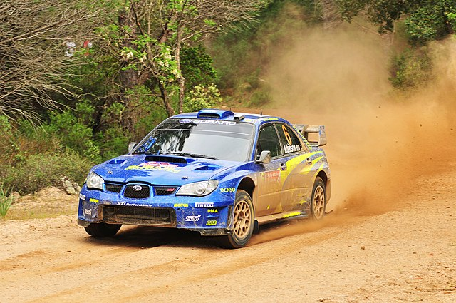

Ра́лі (від англ. rally) — автоспортивне змагання, суть якого полягає в тому, щоб проїхати на спеціально підготованому для цього автомобілі спеціально визначеною організатором змагання трасою у заздалегідь визначений термін та/або у найкоротший час від місця старту до місця фінішу (дистанція змагань).
Зміст
- Види ралі
- Порядок і організація змагань
- Команди і екіпажі
- Траси
- Ралійні автомобілі
- Див. також
- Джерела
- Посилання
Види ралі
Класичне ралі або ралі другої категорії — автоперегони, в яких головне завдання екіпажу — прибути у визначений час у визначений пункт за визначеним маршрутом. Для ускладнення завдання на певних ділянках траси додатково проводяться спеціальні змагання, наприклад на рівномірність руху та інші. Змагання відбуваються на дорогах загального користування без обмеження руху транспорту для інших користувачів. Авторалі або ралі першої категорії — перегони, що відбуваються на дорогах загального користування, в яких головним завданням є проходження у якнайкоротший час спеціальних (інша назва — швидкісних) ділянок (СД або ШД) траси, за умови вчасного прибуття на старт ШД в дорожному режимі з дотриманням правил дорожнього руху. На час проведення змагань дороги, якими прокладено трасу спеціальних ділянок (або скорочено — допів), закриті для всіх користувачів, крім учасників гонки. Ралі-рейди — перегони, які проходять як дорогами загального користування, так і на ділянках без доріг (степ, саванна, пустеля, чагарник і т. ін.). На відміну від звичайного авторалі у ралі-рейдах від штурмана та пілота вимагається вміння орієнтуватися на місцевості в умовах бездоріжжя. Як і в класичному ралі учасники ралі-рейдів є учасниками дорожнього руху на загальних підставах.
Порядок і організація змагань
Змагання проводяться відповідно до вимог Міжнародної Автомобільної Федерації (FIA) згідно з регламентом, який затверджується залежно від рангу змагань національними автомобільними федераціями або федераціями вищого рівня. Регламент гонки визначає та деталізує всі вимоги та особливості кожної конкретної гонки. До найважливіших обов'язків організатора гонки відносять: вибір та підготовка траси гонки, забезпечення безпеки учасників та глядачів, суддівство, хронометраж, інформаційне забезпечення учасників, контроль відповідності технічних засобів вимогам FIA та інше. В ралі учасники стартують послідовно з певним інтервалом у порядку, який визначено правилами FIA. Траси ралійних змагань зазвичай прокладаються дорогами загального користування, на відміну від шосейно-кільцевих перегонів та ралі-кросів, де змагання відбуваються на спеціально облаштованих трасах. Чемпіонати з ралійних дисциплін складаються з декількох етапів, згідно з заздалегідь затвердженим календарем. Кожен етап відбувається на окремій трасі. Етапи змагань багатоденні, тривалість — від 2-х днів для національних чемпіонатів з авторалі, до 10-15 днів для ралі-рейдів типу «Париж — Дакар». Перед гонкою екіпажі отримують документ-завдання, який називається легенда.
Команди і екіпажі
У змаганнях з авторалі беруть участь як окремі екіпажі, так і ралійні команди, які складаються з декількох (2 — 3) екіпажів. Ралійний екіпаж складається з двох осіб: пілота і штурмана. Пілот та штурман окрім водійських прав міжнародного зразка повинні мати ліцензії на участь у змаганнях. Існують також вікові обмеження на участь у ралійних змаганнях. У більшості випадків участь у змаганнях можуть брати спортсмени не молодше 18 років. Для національних чемпіонатів національні федерації можуть встановлювати свій віковий ценз. У Великій Британії дозволяється стартувати пілотам віком від 18 років.
Траси
- для авторалі — 200–400 км, з яких 50% займають спецділянки, або скорочено — СД (англ. SS — special stage, пол. OS — Odcinek specialny, рос. СУ - спецучасток, нерідко вживається жаргонна назва «доп» від рос. дополнительный участок)
- для ралі-рейдів — до десятків тисяч кілометрів;
- для класичного ралі — коливається в широких межах від сотень до тисяч кілометрів.
Ралійні автомобілі
В ралі використовуються переважно серійні легкові автомобілі з деякими конструктивними змінами. Ралійні автомобілі поділяються на класи та групи залежно від конструктивних особливостей (тип приводу, потужність двигуна та ін.). Класифікація ралійних автомобілів затверджується FIA, однак національні федерації мають право для своїх першостей вводити додаткові класи.
Див. також
Малик Сергій ДмитровичБлок Кен
стаття